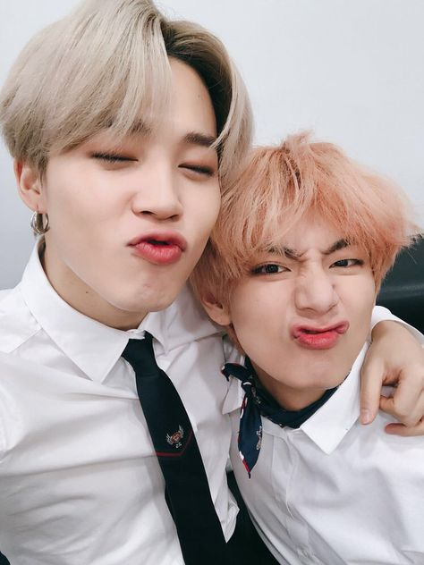
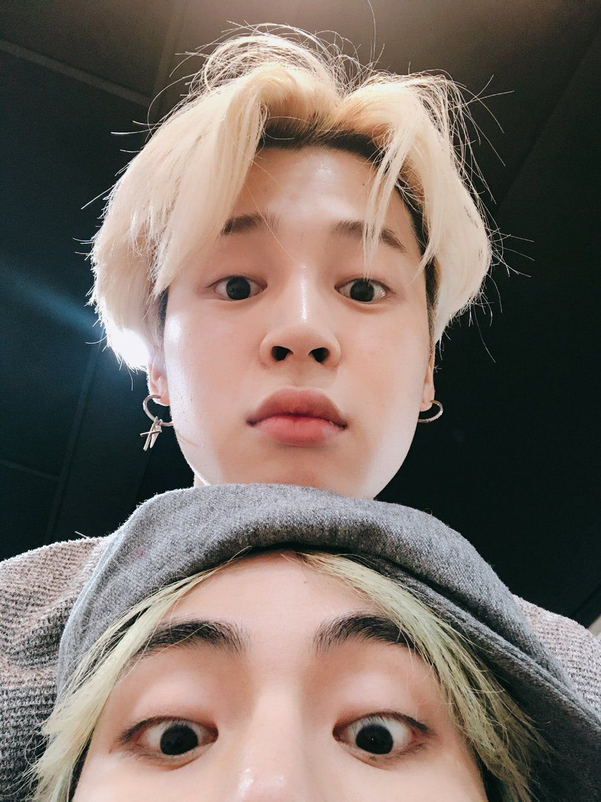

¿Qué quiere decir la palabra "TAEMIN"?
La palabra TAEMIN es el resultado de combinar el nombre de Jimin (MIN) y Taehyung (TAE), y es así como se le denomina a la mayoria de interacciones que estos 2 miembros del grupo BTS tienen.
La historia sobre amistad de Jimin y Taehyung
Una de las personas que más apoyó a Jimin cuando empezó a entrenar dentro de Big Hit fue Taehyung, con quien no solo encontró la manera para adaptarse a su nueva vida, sino que también construyó una valiosa amistad que perdura actualmente. Los idols también estudiaron en la misma preparatoria donde también se graduaron al mismo tiempo. De hecho, durante ese período fue cuando Jimin se transfirió a la Escuela Preparatoria Daegu Jaeli donde V estudiaba, y ahí tuvo que quedarse en un dormitorio. Este ambiente fortaleció aún más su unión pues compartian mucho tiempo juntos. V ya estaba acostumbrado al ambiente pues llevaba tiempo en ese lugar, sin embargo, para Jimin fue una tarea un poco complicado pues tenía que adaptarse a un entorno nuevo y hacer amistad. En un principio, los hábitos de sus compañeros se le hicieron fuera de lo común hasta que logró obtener la seguridad para adaptarse a ellos. En este proceso, encontró la mano de Taehyung, quien siempre se mostró amigable y lo hacía sentir bienvenido, pues le presentó algunos de los profesores y amigos. Tae siempre lo hizo sentir bienvenido. Durante todo este tiempo, V y Jimin han mantenido una increíble amistad, fueron la Escuela de Ares Escénicas de Busan y son integrantes de BTS, los dos han podido compartir casi las mismas experiencias y han construido lazos inquebrantables.
 Jimin y Tae a final de cuentas son personas, y cuentan con similutudes y diferencias entre ellos. Aquí te muestro una lista de las similitudes y diferencias entre los soulmates:
- Ambos están en la Línea Vocal , Línea Maknae y Línea de Danza .
- Ambos nacieron en 1995.
- A ambos les gusta el color negro.
- Ambos fueron a la misma escuela.
- En 2021, se graduaron en la Maestría en Global Cyber University.
- Compusieron e interpretaron una canción llamada "FRIENDS".
- V ha estado en un programa de televisión, pero Jimin no.
- El tema favorito de Jimin es el arte, pero el de V es la música.
- V tiene una mascota y Jimin no tiene ninguna.
- Jimin nació en octubre y V nació en diciembre.
Similitudes
Diferencias
FRIENDS
En un directo Jimin reveló la historia detrás de cómo se hizo la canción “Friends”. Explicó que estaba probando diferentes cosas en el piano mientras hacía varias canciones. Llevó tres canciones a Bang Shi hyuk para obtener sus opiniones sobre ellas. Bang PD sorprendentemente eligió la tercera canción, que fue la canción que Jimin sintió que era la más incompleta. Los dos trabajaron juntos sin parar para completar la pieza y, durante ese tiempo, a Jimin le pareció tan interesante ver cómo algo que podía verse como incompleto se convertía en una verdadera obra de arte. Más tarde fue contactado por Bang PD preguntándole qué pensaba acerca de agregar su canción al nuevo álbum. Jimin estaba tan sorprendido ya que no estaba seguro de si su canción era lo suficientemente digna para ser parte del próximo álbum. La decisión final fue convertirlo en un dueto con el miembro V. Dicha canción representa la hermosa relación amistosa que existe entre los 2 miembros, contando algunos detalles de como se conocieron y la relación. De hecho es en está canción en donde se refiernen a sí mismos como "soulmates" (almas gemelas).
He aquí el pedazo de arte: